notre ancêtre de la 5ième génération
fiche familiale
  |
Raymond Henri décède à l'âge de 86 ans. Naissance le 24 juillet 1843 à St-Gervais, cté Bellechasse Baptême: 24 juillet 1843 à St-Gervais, cté Bellechasse Parrain Raymond Aubé, marraine Brigitte Lemieux. Décès le 23 mars 1930 à St-Malachie, cté Dorchester Père: Michel Henry/Henri Mère: Basilisse Lemieux (sa famille) Mariage le 5 octobre 1869 à St-Malachie, cté Dorchester Épouse: Marie Blais décède à l'âge de 72 ans. Naissance le 15 avril 1850 Décès le 5 mars 1923 à St-Malachie, cté Dorchester Père: Guillaume Blais Mère: Marguerite Marceau (sa famille) |
| 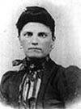 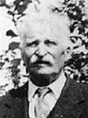 |
Enfant 1 Vitaline Henri Naissance le 20 octobre 1870 à St-Malachie, cté Dorchester Décès: avant 1909 Mariage le 7 août 1893 à St-Malachie, cté Dorchester Conjoint: Joseph Blais n. 8 juin 1872 d. 27 novembre 1954. Père: Michel Blais Mère: Marie-Marguerite Châteauneuf Ils eurent 5 enfants, 2 gas et 3 filles. |
| 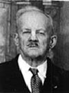 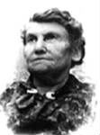 |
Enfant 2 Onésime Henri décède à l'âge de 79 ans. Naissance le 4 janvier 1872 à St-Malachie, cté Dorchester Décès le 24 juin 1951 à Magog, cté Stanstead Mariage le 18 juillet 1899 à St-Léon de Standon, cté Dorchester Conjointe: Rosanna Corriveau n. 7 avril 1880 d. 23 février 1969. Père: Pierre-Octave Corriveau Mère: Marie Lacroix Ils eurent 13 enfants, 7 gas et 6 filles. |
Enfant 3 Cyrille Henri
Naissance en 1874 à St-Malachie, cté Dorchester
Décès vers 1900 noyé à Roberval, Lac-St-Jean.
-------------------------------------------------------------------------------
| 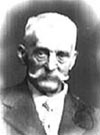 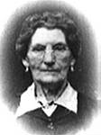 |
Enfant 4 Anselme Henri décède à l'âge de 79 ans. Naissance le 12 mars 1875 à St-Malachie, cté Dorchester Décès le 23 mars 1954 à St-Malachie, cté Dorchester Funérailles: 27 mars 1954 à St-Malachie Sépulture: au cimetière de St-Malachie Mariage le 11 septembre 1900 à St-Édouard-de-Frampton, cté Dorchester Conjointe: Rose-Aimée Audet/Lapointe n. 12 juillet 1879 d. 22 janvier 1959. Père: Jean Audet/Lapointe Mère: Marguerite Fortin Ils eurent 2 enfants, 1 gas et 1 fille. |
  |
Enfant 5 Eugène Henri décède à l'âge de 82 ans. Naissance le 14 avril 1877 à St-Malachie, cté Dorchester Décès le 29 mars 1960 à Noranda, cté Témiscamingue Mariage le 16 juillet 1901 à Ste-Rose de Watford, cté Dorchester Conjointe: Graziella Provost n. 26 avril 1883 d. 12 avril 1974. Père: Louis-Firmin Provost Mère: Marie-Apolline Nolin (sa famille) |
| 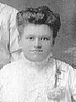 |
Enfant 6 Octave Henri décède à l'âge de 79 ans. Naissance le 2 mai 1879 à St-Malachie, cté Dorchester Parrain John Wilson cultivateur de St-Malachie, marraine Élzabeth Blais sa tante maternelle. Décès le 26 février 1959 à Sudbury, ON Mariage le 12 janvier 1909 à Escanaba, Delta, Michigan, US Conjointe: Agnès Cabillot Père: Eugène Cabillot Mère: Virginia Guérie Ils eurent 3 enfants, 2 gas et 1 fille. Un de ses fils est décédé noyé à Sudbury, ON |
| 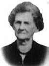 |
Enfant 7 Clarina-Anna Henri décède à l'âge de 82 ans. Naissance le 28 avril 1880 à St-Malachie, cté Dorchester Décès le 25 mars 1963 à St-Edouard de Frampton, cté Dorchester Mariage: 1 octobre 1907 à St-Malachie, cté Dorchester Conjoint: Eusèbe Audet n. 28 mai 1881 d. 21 février 1954. Père: Thomas Audet/Lapointe Mère: Marie-Délima-Malvina Bélanger Ils eurent 7 enfants, 4 gas et 3 filles. |
| |
Enfant 8 Arthur Henri décède à l'âge de 71 ans. Naissance le 14 mars 1883 à St-Malachie, cté Dorchester Décès le 5 septembre 1954 à St-Malachie, cté Dorchester Cultivateur dans le 11ème Rang. Mariage le 5 octobre 1915 à St-Malachie, cté Dorchester Conjointe: Rose Ruel n. en 1891 d. 7 octobre 1974. Père: Patrick Ruel Mère: Marie Rouleau Ils eurent 3 enfants, 2 gas et 1 fille. |
| 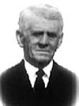 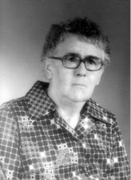 |
Enfant 9 Joseph Henri décède à l'âge de 75 ans. Dit "Jos" Naissance le 2 décembre 1884 à St-Malachie, cté Dorchester Décès le 23 février 1960 à St-Malachie, cté Dorchester Cultivateur dans le 11ème Rang. Mariage le 18 juillet 1916 à St-Malachie, cté Dorchester Conjointe: Antoinette Tanguay Père: Octave Tanguay Mère: Marie-Ludivine Lafontaine Ils eurent 6 enfants, 5 gas et 1 fille. |
Enfant 10 Olivine Henri
Naissance en 1887 à St-Malachie, cté Dorchester
Décès: avant 1980
-------------------------------------------------------------------------------
Enfant 11 (Anonyme) Henri
décède à la naissance.
Naissance en 1889 à St-Malachie, cté Dorchester
Décès en 1889 à St-Malachie, cté Dorchester
-------------------------------------------------------------------------------
| 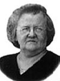 |
Enfant 12 Octavie Henri décède à l'âge de 64 ans. Naissance le 25 avril 1890 à St-Malachie, cté Dorchester Décès le 6 décembre 1954 à Magog, cté Stanstead Mariage le 16 octobre 1923 à St-Malachie, cté Dorchester Conjoint: Evangéliste Brousseau Père: Joseph Brousseau Mère: Démérise Lafontaine Ils eurent 4 enfants, 2 gas et 2 filles. |